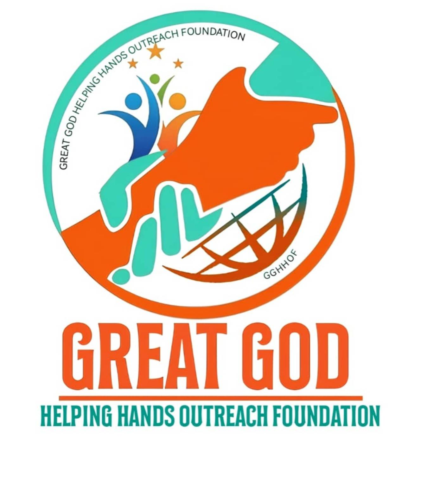
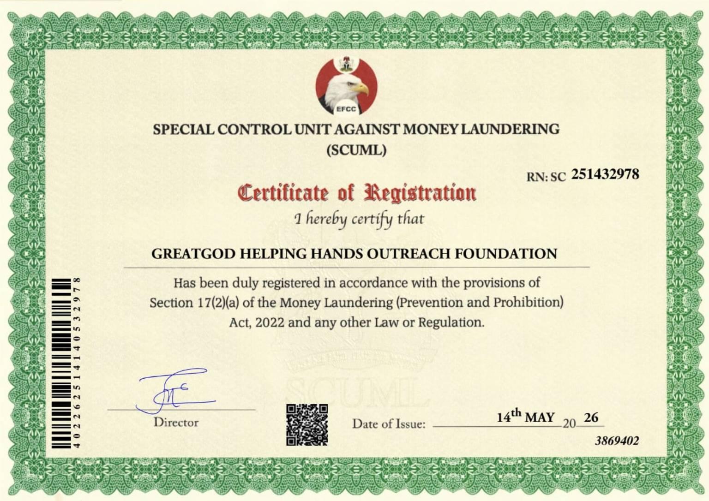

Students trained
Total number of learners who have completed training.

GREAT GODHELPING HANDS OUTREACH FOUNDATIONPEOPLE · COMPASSION · HOPE · CHANGE
We reach out to people in need with practical support, compassion and dignity — because every life matters.
MEASURING OUR COMMITMENT
We share verified figures to show the difference your support makes. Figures will be updated by authorised Foundation administrators.
Total number of learners who have completed training.
Students actively enrolled in current programmes.
Pastors and missionaries receiving monthly ministerial allowance.
LEARNING & EMPOWERMENT
Celebrate the skills, progress and achievements of people taking part in our training programmes. Individual profiles are optional.
Add the course name, training location, number of participants, dates and a short description.
With consent, add a learner’s first name, photograph, skill acquired and a short success story. You may also show group photos without naming individuals.
FAITH IN ACTION
Follow church projects supported by the Foundation, from the first stage to completion.
Project name, church, location, description, start date, progress update and photographs will be published here after approval.
Completed projects can include before-and-after photographs, completion date and a short outcome report.
Project cards and totals are examples only until the Foundation enters verified information. The public website will not display confidential budgets or personal financial records.
WHO WE ARE
Great God Helping Hands Outreach Foundation is a humanitarian outreach organisation committed to serving vulnerable people and strengthening communities.
Guided by faith and compassion, we seek to respond to practical needs, restore dignity and encourage lasting hope. Our work is rooted in service, respect, accountability and partnership.
Be part of the mission →To extend God's love by reaching people in need with compassionate, practical and sustainable support.
Communities where vulnerable people are valued, supported and empowered to build a brighter tomorrow.
HOW WE SERVE
Our outreach focuses on practical needs and the wellbeing of the whole person.
Sharing encouragement, prayer and the message of hope with compassion and respect.
Supporting poor missionaries and their children with food, healthcare and education.
Providing essential supplies and relief to individuals and families facing hardship.
Encouraging learning through school materials, guidance and educational support.
Promoting wellbeing and helping vulnerable people access basic healthcare.
Visiting underserved communities, listening and responding to local needs.
THE PEOPLE BEHIND THE MISSION
Our structure is flexible and can grow as the Foundation appoints new leaders, team members and partners.
Ike Silas Ifeanyi
Onugha Progress Onyedikachi
Name, photograph and biography to be added
Ike Silas Ifeanyi
Onugha Progress Onyedikachi
Ekwoba Ifeanyichukwu Joshua
To be added when formally appointed
Staff, volunteers and programme coordinators
Churches, NGOs, companies and supporters
Recommended governance title: Founder & Chairman of the Board. Add a separate CEO / Executive Director when that position exists. Administrators will be able to add, edit, remove and reorder roles and profiles.
STORIES OF IMPACT
A growing record of the people, places and moments that shape our work.
For videos, upload to YouTube or Facebook and add the public video link in the gallery section. Always obtain consent before publishing identifiable photos of beneficiaries, especially children.
YOUR GENEROSITY CHANGES LIVES
Your donation can help provide food, education, healthcare and hope to people who need it most. Donations are intended for the Foundation’s own bank account; the website does not hold donor funds.
Our bank account is held in the registered name of GREAT GOD HELPING HANDS OUTREACH FOUNDATION at Zenith Bank, Nigeria. Please contact us to receive verified transfer instructions, including SWIFT and correspondent bank details where applicable.
MAKE A DIFFERENCE
Give your time, skills and compassion to support outreach activities.
Register interest →Churches, businesses, NGOs and community groups can collaborate with us.
Discuss a partnership →Support a specific outreach, programme or community need.
Become a sponsor →OUR REGISTRATION & GOVERNANCE
We share selected organisational documents to help donors, partners and the public understand our registration and governance.

IT Number: 9481399
Registered 12 April 2026 · Status shown as ACTIVE in the CAC report generated 12 April 2026.
The Foundation’s constitution, including its objectives, trustee provisions, meetings and special clause.
Read constitution (PDF) →Trustee meeting minutes and the full CAC status extract are retained for internal governance and verification; they are not displayed publicly because they contain personal details and signatures.
ACCOUNTABILITY MATTERS
We believe supporters deserve to understand how contributions are used. We plan to publish outreach summaries, project updates and annual financial reports here.
Reports will be added as they are approved for publication.
LET'S CONNECT
Have a question, want to volunteer or discuss a partnership? We would love to hear from you.
Emailgreatgodhelpinghandsfoundation@gmail.com
WhatsApp+228 93 42 44 72
Nigeria office+234 703 794 5976
+234 706 247 3701
FacebookGreat God Helping Hands Foundation
LocationLagos, Nigeria · Outreach in Togo